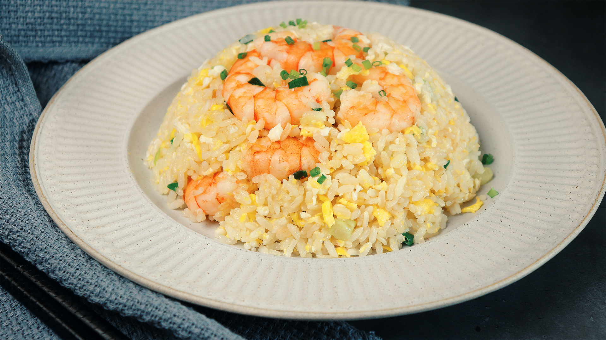

Egg Fried Rice Recipe

How to make Shrimp Egg Fried Rice
This healthy egg, vegetable and shrimp fried rice comes together in about 30 minutes
for a delicious dinner you can make any day of the week.
Ingredients
- Shrimp
- White Rice
- Scallions
- Eggs
- Kosher Salt
- White Pepper
- Baking Soda
- Sugar
- Chicken Bouillon Powder
- MSG
- Neutral Oil
Steps
- Marinate your shrimp with a very simple marinade consisting of kosher salt, white pepper, baking soda, and neutral oil.
The baking soda will help firm up the shrimp and keep them crisp.
- After marinating the shrimp, cook them in a pan over medium high heat with 1 tbsp of neutral oil for 2-3 minutes
or until just cooked through.
- After the shrimp are removed, heat another 3 tbsp of oil to the pan and saute the
scallion whites for a few seconds until fragrant.
- Add 4 large eggs and use your ladle or spatula to break them up and scramble them.
Continue cooking for 1-2 minutes until the eggs are about 70-80% cooked through and still slightly soft.
- add the day old white rice and mix thoroughly until the egg and scallion is mixed in with the rice. Continue cooking over high heat until the rice is relatively dry and you are able to see the rice grains separating in the pan.
This can take anywhere from 3-4 minutes depending on the heat of your stove. Add the seasonings and give it another good mix.
- Once the fried rice is nicely seasoned and dry (always taste and season according to your preference), add back your cooked shrimp and scallion greens.
Give it another good mix to incorporate and your fried rice is done!
- Serve and enjoy!
Back